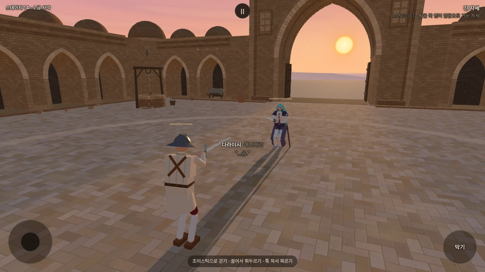
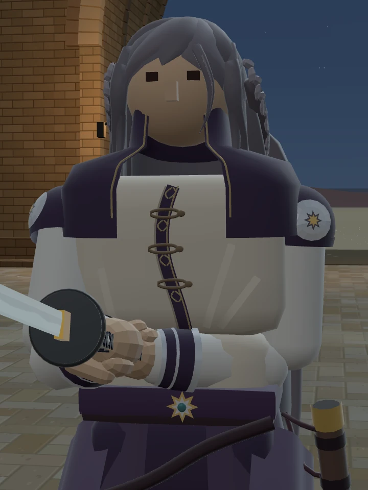
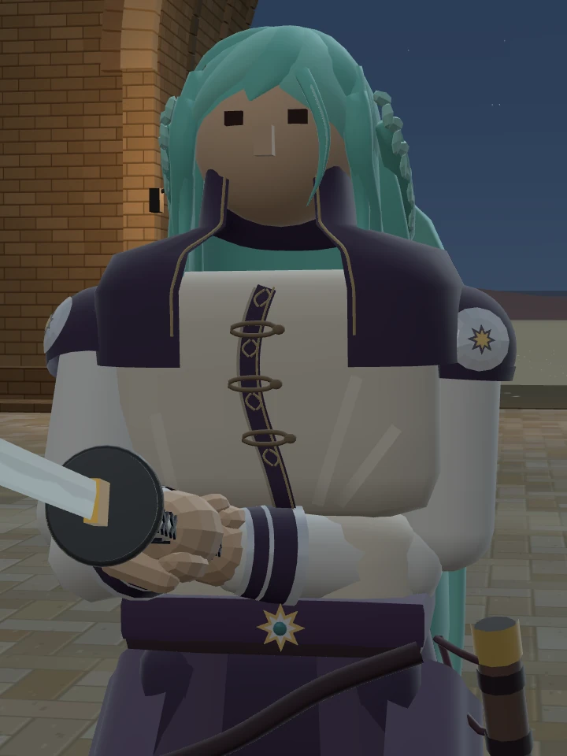
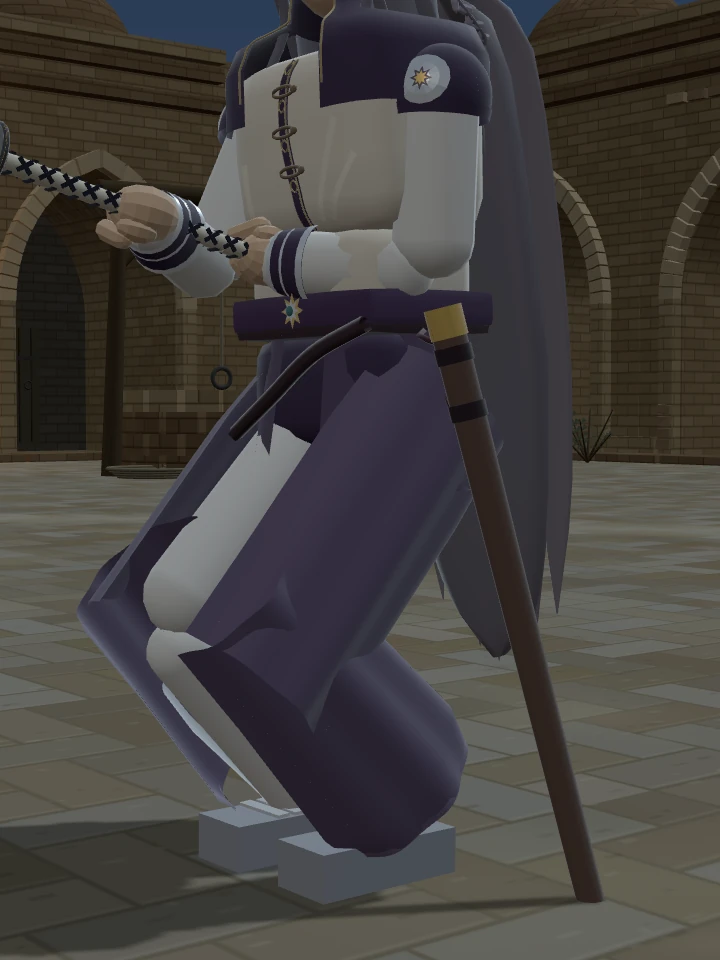
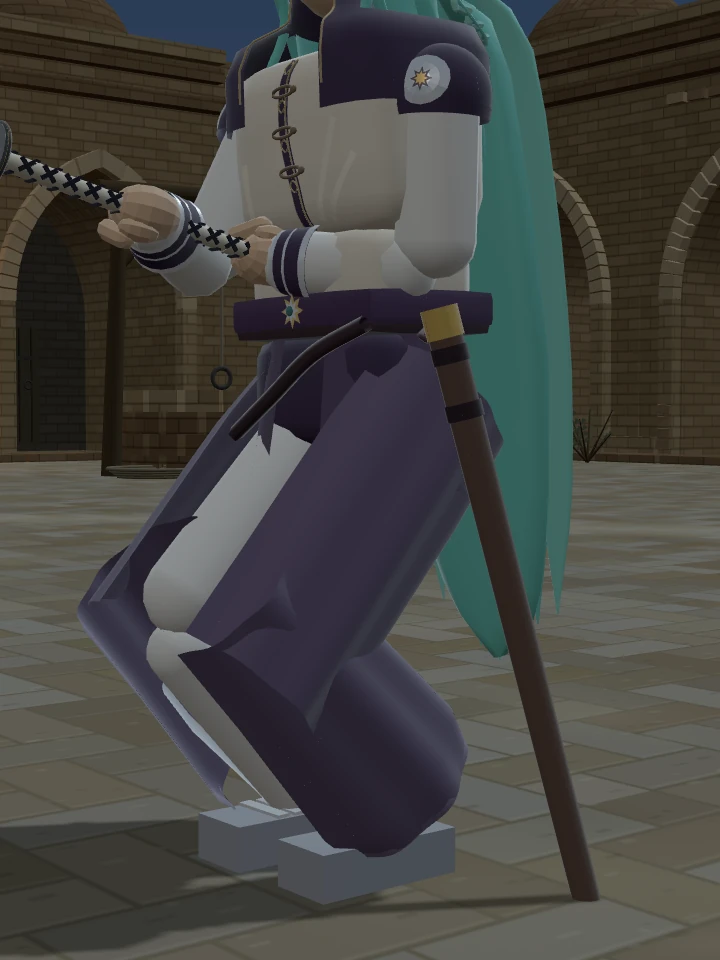
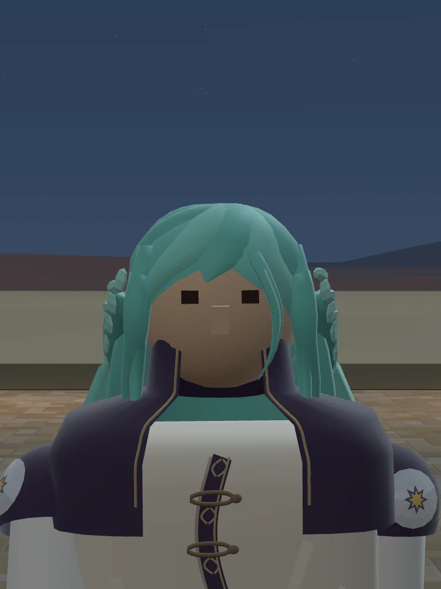
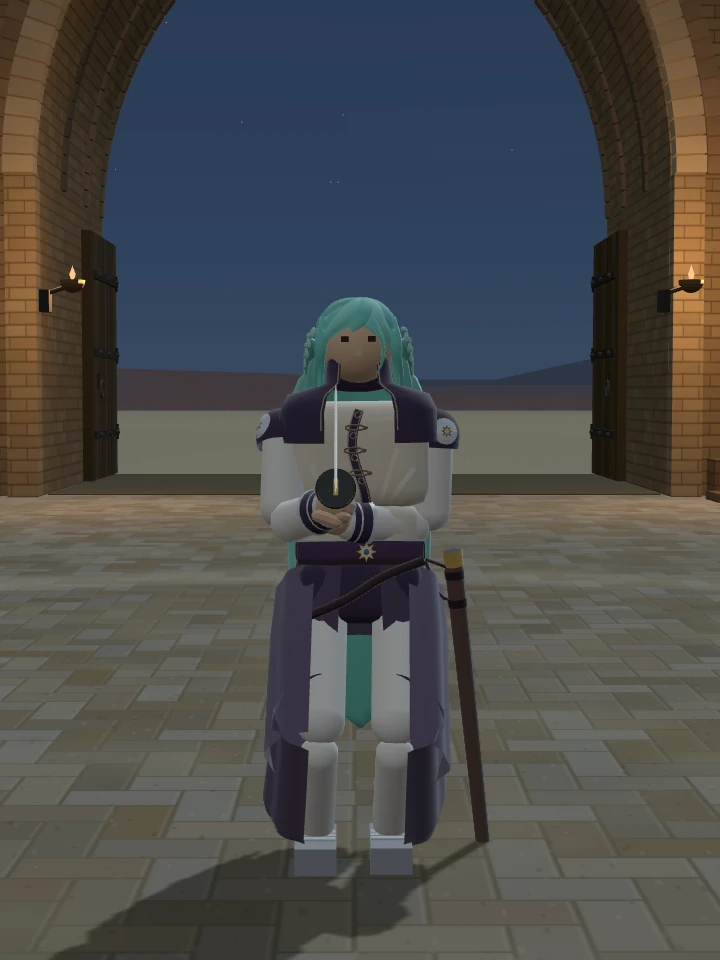
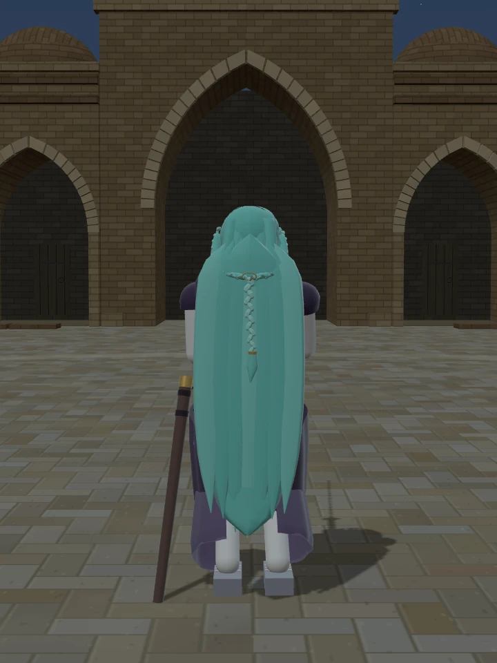
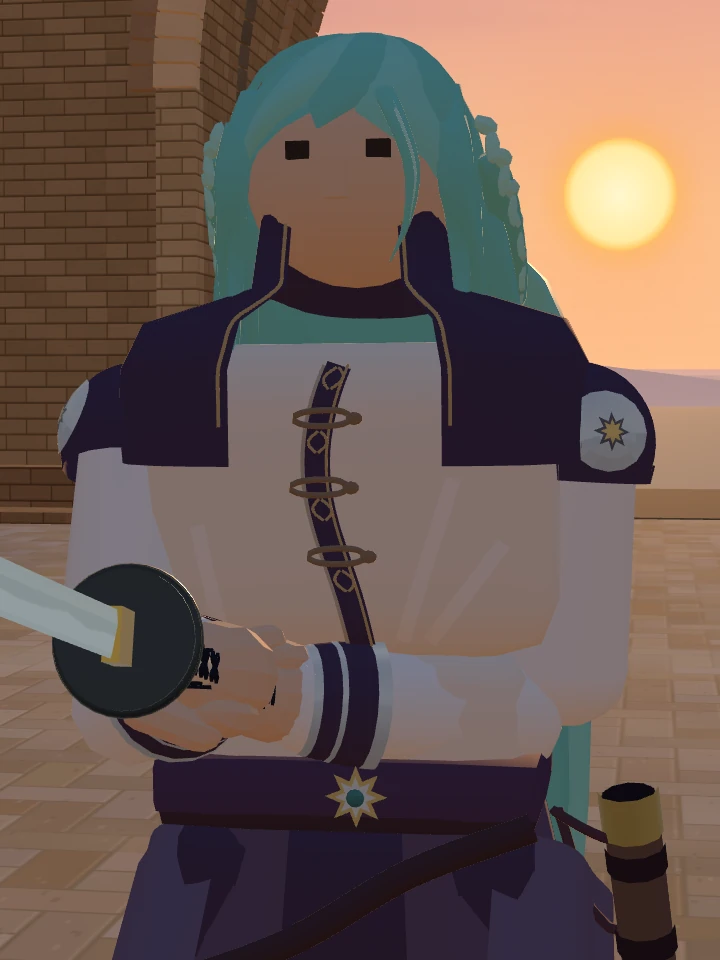

STILLNESS · 적막
다라이시
밝은 에메랄드빛 머리.
곡선 앞섶과 슬림한 머리 형태를 유지한 색 시안입니다.

은발에서 에메랄드로
청록빛 에메랄드 바탕에 밝은 결을 더했습니다. 땋은 부분과 한 가닥의 앞머리도 같은 계열로 맞췄습니다.




같은 밤 조명·카메라·축척입니다. 머리 자체에서 빛이 나지는 않습니다.
칼집을 조금 더 가까이
기울기는 유지하고, 칼집을 몸 쪽으로 8mm만 붙였습니다. 매다는 끈의 끝도 함께 옮겼습니다.




앞머리·전신·뒷모습·낮의 색 보기







